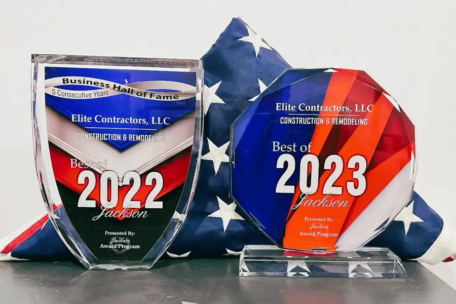
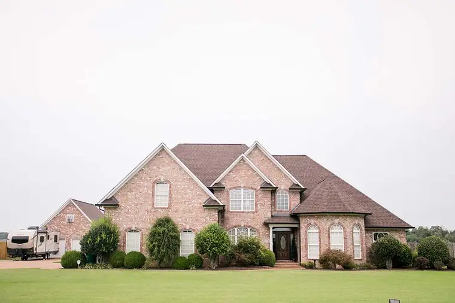
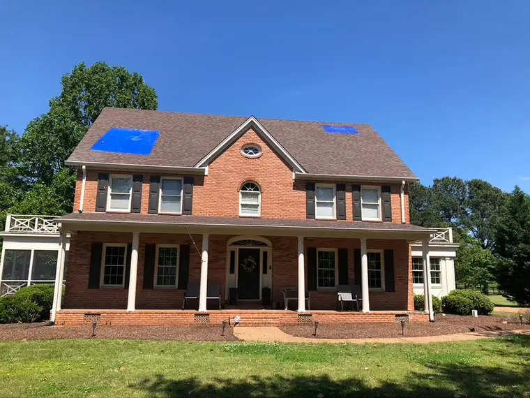
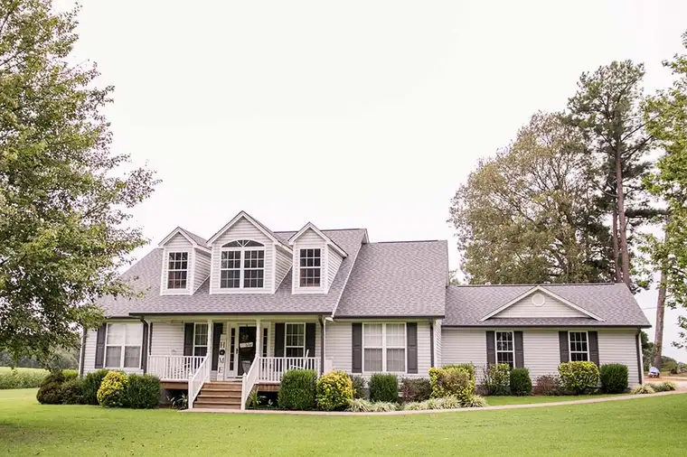
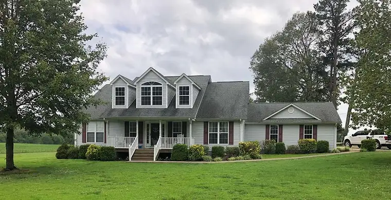

Jackson, Tennessee · Licensed, bonded & insured
Roofing and construction, done once.
A Tennessee unlimited licensed general contractor serving Jackson and the Southeast US. Commercial and residential construction, roofing and insurance restoration with one point of contact.
Commercial & residential construction & roofing
No matter if you need a new roof or construction on your office building, church, strip mall or house, we will not just complete your project, we will make your property look and function better than before. As the premier supplier of Atlas Roofing products and a partner of ABC Supply, your home or business receives nothing but the finest quality products in the industry.
Roofing
Commercial membrane and silicone roofing, residential shingles and storm repair.
Learn more →
Commercial Renovation
From a small office remodel to a multi-story build, every phase under one roof.
Learn more →
Insurance Restoration
Fire, wind, hail and water damage. We manage the claim and the rebuild.
Learn more →
Residential Roofing
New roofs, gutters and exterior renovations for Tennessee homes.
Learn more →Award-winning contractor in Jackson, TN
We are Elite Contractors, your one stop for all of your commercial, residential and insurance restoration construction needs. For over 20 years the staff at Elite has strived to deliver the highest quality customer service.
- Best of Jackson, Construction and Remodeling, 2018 to 2023 (Jackson Awards Program)
- Carlisle Roofing product supplier
- VIP Best Roofer & General Contractor 2023
- A 2020 Top 100 National Roofing Contractor

Before & after
No matter your residential, commercial or insurance restoration needs, Team Elite delivers top-notch service every step of the way.


BeforeAfter

BeforeAfterHeard it through the grapevine
Elite Contractors has completed several large commercial roofing projects for our company over the years. The projects were all completed on time with excellent results.
Elite has done a lot of work for me over the years on my rental property and my personal home. They have always done a great job!!!
Elite Contractors replaced the roofs on our three commercial buildings and did a wonderful job. Their service was impeccable and roofs are high quality and very insulating as well as beautiful upgrades to our buildings.


Financing & FAQ
Financing for any construction project up to $100,000, terms up to 15 years, answer within 24 hours.
Why should you choose Elite Contractors?
Elite Contractors is a Tennessee licensed General Contractor. That means we can handle any and all of your construction needs. From start to finish, design phase to final completion, our clients have one point of contact with Elite’s experienced staff to ensure a great experience.
Does Elite Contractors offer 2D and 3D drawings?
Elite Contractors has a designer to assist with any drawings or plans needed for our clients. If these plans require an architects stamp, Elite can provide that as well.
Does Elite Contractors use subcontractors?
Yes, Elite Contractors may use and only hire licensed and insured subcontractors. Such subcontractors can include but may not be limited to electricians, HVAC technicians, and plumbers.
How do I obtain an estimate & how long does it take to get it?
If you need an estimate on a construction project, contact Elite Contractors at 731-300-3510 or email us at info@elitecontractors.com. We will schedule an on site appointment to listen to and help determine your exact construction needs. Most roofing quotes can be provided within 24-48 hours. Larger projects may require more time. However, your pro at Elite Contractors is always available to provide updates and will be able to give you a reasonable time frame on your estimate.
More than a general contractor
Since 2004, Team Elite has provided home improvement and construction services throughout Tennessee and the Southeast US. We are a leading mitigation contractor committed to minimizing damage and helping customers recover from natural disasters.
Tell us about your projectCall 731-300-3510Trusted products & partners


Elite Contractors is a trusted vendor for Realty Trust Group, aligning expert general contracting with strategic advisory and development vision.